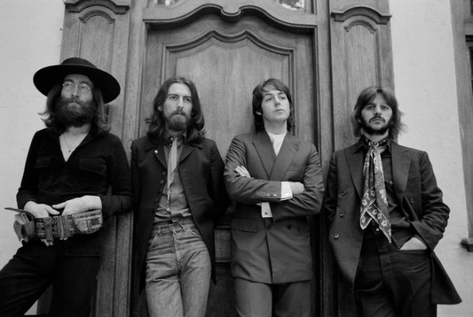
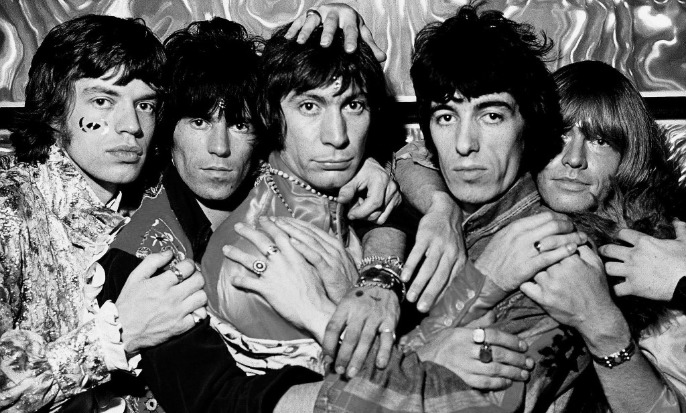
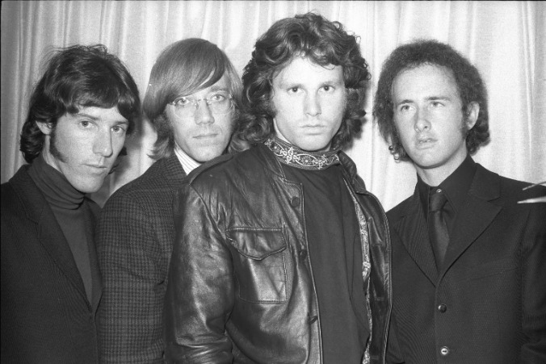
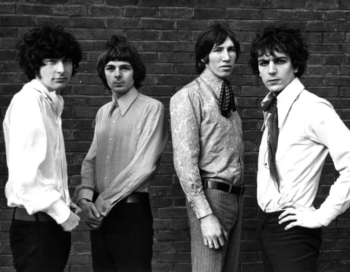
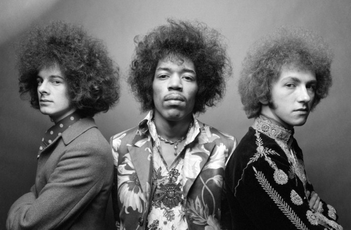
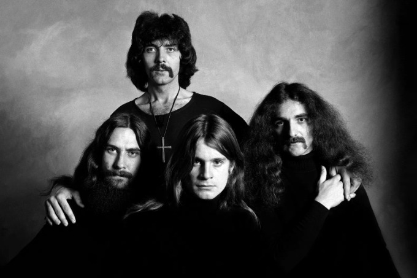

The Beatles
Британская рок-группа из Ливерпуля, основанная в 1960 году, стала одной из ключевых фигур движения «Британское вторжение».
Считается одной из наиболее успешных групп XX века как в творческих, так и в коммерческих достижениях.

The Rolling Stones
Легендарная британская рок-группа, основанная в 1962 году.
В то время считалась "бунтарской" альтернативой более ранним The Beatles.
Одна из самых влиятельных и успешных групп в истории музыки.

The Doors
Американская рок-группа, созданная в 1965 году в Лос-Анджелесе.
Стала одной из самых противоречивых групп 1960-х годов, оказав значительное влияние на культуру и искусство того времени.
Споры о творчестве группы ведутся и по сей день.

Pink Floyd
Британская рок-группа, была основана в 1965 году в Лондоне.
Коллектив прославился продолжительными композициями, объединёнными в концептуальные сюиты.
Также роль сыграли и философские тексты, выдающиеся обложки альбомов и грандиозные шоу.

The Jimmy Hendrix Experience
Британско-американская рок-группа в формате пауэр-трио, образованная в Вестминстере (Лондон) в 1966 году.
Группа оказала большое влияние на популяризацию хард-рока и психоделического рока.
Она была наиболее известна мастерством, стилем и харизмой своего фронтмена Хендрикса.

Black Sabbath
Британская рок-группа, основанная в Бирмингеме в 1968 году.
Коллектив считается одним из основоположников хеви-метала.
Стала стартовой точкой для развития сольной карьеры Оззи Осборна.
